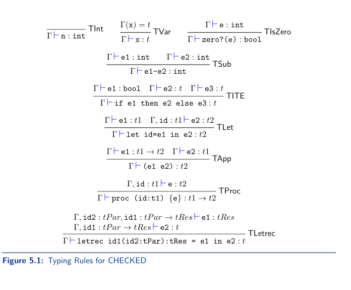
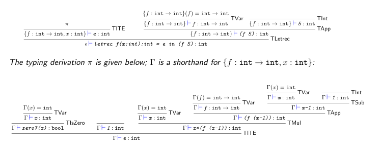

5.1 Checked
CHECKED is built off of REC, it does not have stuff from Explicit or Implicit refs.
5.1.1 Concrete Syntax
CHECKED has the following concrete syntax
⟨Expression⟩ ::= ⟨Number⟩
⟨Expression⟩ ::= ⟨Identifier⟩
⟨Expression⟩ ::= ⟨Expression⟩⟨BOp⟩⟨Expression⟩
⟨Expression⟩ ::= zero?(⟨Expression⟩)
⟨Expression⟩ ::= if⟨Expression⟩ then⟨Expression else⟨Expression⟩
⟨Expression⟩ ::= let⟨Identifier⟩=⟨Expression⟩in⟨Expression⟩
⟨Expression⟩ ::= (⟨Expression⟩)
⟨Expression⟩ ::= proc(⟨Identifier⟩:⟨Type⟩){⟨Expression⟩}
⟨Expression⟩ ::= (⟨Expression⟩⟨Expression⟩)
⟨Expression⟩ ::= letrec{⟨Identifier⟩(⟨Identifier⟩:⟨Type⟩):⟨Type⟩=⟨Expression⟩}^+ in⟨Expression⟩
⟨BOp⟩ ::= +|-|*|/
⟨Type⟩ ::= int
⟨Type⟩ ::= bool
⟨Type⟩ ::= ⟨Type⟩->⟨Type⟩
⟨Type⟩ ::= (⟨Type⟩)
5.1.2 Abstract Syntax
CHECKED has the following abstract syntax
type expr =
| Var of string
| Int of int
| Sub of expr*expr
| Let of string*expr*expr
| IsZero of expr
| ITE of expr*expr*expr
| Proc of string*texpr option*expr
| App of expr*expr
| Letrec of rdecs*expr
and
rdecs = (string*string*texpr option*texpr option*expr) list
and
texpr =
| IntType
| BoolType
| FuncType of texpr*texpr
5.1.3 Type Checker
The specification of the type checker is a type system
5.1.3.1 Specification
A type system is an inductive set that helps identify the subset of expressions that are well-typed or typable
The elements of the set are called typing judgements
Which typing judgements belong to the set and which don't is decided by a set of typing rules
A typing judgement is an expression of form T |- e:t
T is a type environment, e is an expression in CHECKED, and t is a type expression.
A type environment is a partial function that assigns a type to an identifier. They are required for typing expressions that have free variables.
Ex: an expression x+2 will require us to know the type of x in order to determine if it's possible. If x = true, 2+true isn't possible, so it isn't typable, but if x=int, then it is possible, so it is typable.
Type environments are defined as
T ::= c | T, id: t
c is the empty type environment T, id:t assigns type t to identifier id, and behaves as T for identifies from other ids.
Assume T doesn't have repeated entries for the same identifier
An example of a type environment is c,x:inty:bool
The typing rules are given below, the rules for addition subtraction and division are omitted, they are like TSub
An expression e is typable if there is a typing environment T and a type t such that the typing judgement T|-e:t is derivable using the typing rules, or else it is untypable.
An example of a typing derivation is Consider the typing judgement c|-letrec f(x:int):int = e in (f 5) : int where e stands for if zero?(x) then 1 else x**(f (x*-1)). A typing derivation for it is attached below.
 5.1.3.2 Towards an Implementation
The type checker is similar to an interpreter, instead of manipulating runtime values (ex integers & booleans), it manipulates types (ex int & bool).
the type of the type checker is
chk_expr : expr -> texpr ea_result
given an expression, return a function that given a type environment, will return either a type or an error.
Note ea_result abstracts environments, but not type environments. It's type is type 'a ea_result = env -> 'a result
To make ea_result abstract type environments, we update a_result (abstracted result) to be more general
type ('a, 'b) a_result = 'b -> 'a result
the new a_result is parameterized over 2 types
a is the type of the result of the computation
b is the type of function type being abstracted over
Below is the new a_result type implemented
type ’a result = Ok of ’a | Error of string
type (’a,’b) a_result = ’b-> ’a result
let return : ’a-> (’a,’b) a_result =
fun v->
fun env-> Ok v
let error : string-> (’a,’b) a_result =
fun s->
fun env-> Error s
let (>>=) : (’a,’c) a_result-> (’a-> (’b,’c) a_result)-> (’b,’c) a_result =
fun c f->
fun env->
match c env with
| Error err-> Error err
| Ok v-> f v env
let (>>+) : (’b,’b) a_result-> (’a,’b) a_result > (’a,’b) a_result =
fun c d->
fun env->
match c env with
| Error err-> Error err
| Ok newenv-> d newenv
The only differience in this new implementaiton is the types of the supporting operations return, error, (>>=), and (>>+) are different, their code is the same.
ea_result and tea_result now have the following types
type ’a ea_result = (’a,env) a_result
type ’a tea_result = (’a,tenv) a_result
5.1.3.3 Implementation
In the Letrec case of the implementation, >>+ is left associative, the mapping param := tPar is added to the typing environment only for type checking body
let rec chk_expr : expr-> texpr tea_result =
fun e->
match e with
| Int _n-> return IntType
| Var id-> apply_tenv id
| IsZero(e)->
chk_expr e >>= fun t->
if t=IntType
then return BoolType
else error "isZero: expected argument of type int"
| Add(e1,e2) | Sub(e1,e2) | Mul(e1,e2)| Div(e1,e2)->
chk_expr e1 >>= fun t1->
chk_expr e2 >>= fun t2->
if (t1=IntType && t2=IntType)
then return IntType
else error "arith: arguments must be ints"
| ITE(e1,e2,e3)->
chk_expr e1 >>= fun t1->
chk_expr e2 >>= fun t2->
chk_expr e3 >>= fun t3->
if (t1=BoolType && t2=t3)
then return t2
else error "ITE: condition not bool/types of then-else do not match"
| Let(id,e,body)->
chk_expr e >>= fun t->
extend_tenv id t >>+
chk_expr body
| Proc(var,t1,e)->
extend_tenv var t1 >>+
chk_expr e >>= fun t2->
return (FuncType(t1,t2))
| App(e1,e2)->
chk_expr e1 >>=
pair_of_funcType "app: " >>= fun (t1,t2)->
chk_expr e2 >>= fun t3->
if t1=t3
then return t2
else error "app: type of argument incorrect"
| Letrec([(_id,_param,None,_,_body)],_target)
| Letrec([(_id,_param,_,None,_body)],_target)->
error "letrec: type declaration missing"
| Letrec([(id,param,Some tPar,Some tRes,body)],target)->
extend_tenv id (FuncType(tPar,tRes)) >>+
(extend_tenv param tPar >>+
chk_expr body >>= fun t->
if t=tRes
then chk_expr target
else error "LetRec: Type of rec. function does not match declaration")
| Debug(_e)->
string_of_tenv >>= fun str->
print_endline str;
error "Debug: reached breakpoint"
| _-> failwith "chk_expr: implement"
and
chk_prog (AProg(_,e)) =
chk_expr e
Usage ex:
# chk "let add = proc(x:int){proc(y:int){x+y}}in(add 1)";;
- : texpr ReM.result = Ok (FuncType (IntType, IntType))